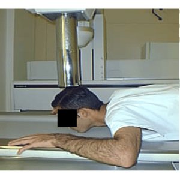
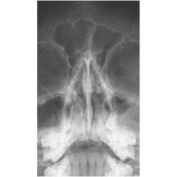
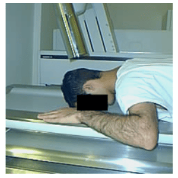
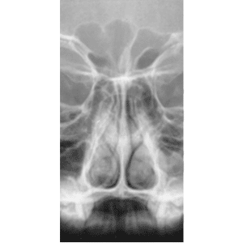
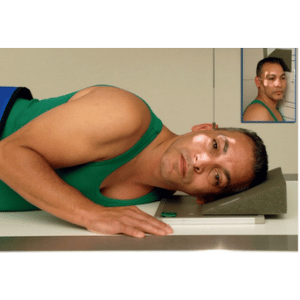
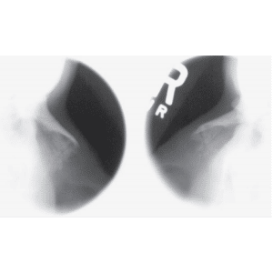

OSSOS NASAIS - método WATERS
Paciente
Paciente em D.V ou ortostático. Pescoço em hiperextensão. MMSS ao lado do crânio, MMII estendidos.
Chassis / Filme
18×24 – transversal.
Raio central
⊥ orientado p/ região do bregma e deve sair no násio.
DFF
1,00 m – com bucky.


Observação: PMS ⊥ ao filme. LMM ⊥ ao filme.
OSSOS NASAIS - método CALDWELL
Paciente
Paciente em D.V. ou ortostático, MMSS ao lado da cabeça, MMII estendidos.
Chassis / Filme
18X24 – transversal.
Raio central
15º, orientado para a região lambdóide, saindo no násio.
DFF
1,00 m – com bucky.


Observação: PMS ⊥ ao filme. LOM ⊥ ao filme.
OSSO NASAL - PERFIL
Paciente
Paciente em D.V., posição de nadador ou ortostático. Crânio em perfil absoluto.
Chassis / Filme
18×24 – transversalmente.
Raio central
⊥ orientado para o osso nasal.
DFF
1,00 m – com bucky.


Observação: PMS ⊥ ao filme. LIOM paralela a borda superior do filme, LIP ⊥ a mesa.